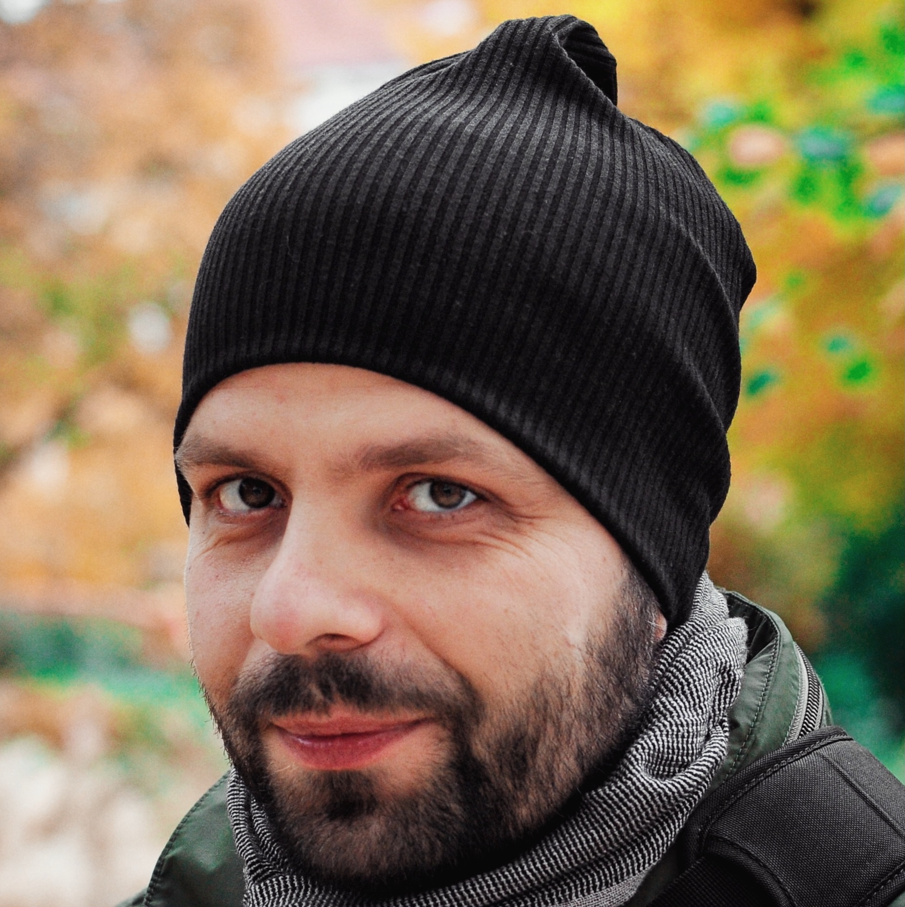

Quality Assurance Expert | Quality Engineering Lead
Berlin, Germany

Seasoned Engineering Leader with 18 years of comprehensive experience driving excellence and quality within engineering teams. Adept at leading cross-functional teams to achieve strategic goals through effective Quality Engineering and Shift-Left Testing methodologies. Expertise spans automated testing across front-end, back-end, web, and mobile platforms, with proven success in designing and deploying custom Continuous Integration solutions that seamlessly integrate Test Automation into development lifecycles.
Demonstrated ability to develop and execute company-wide engineering and quality strategies, fostering cultures of continuous improvement and innovation. Skilled in Agile-driven product development coordination, complex problem-solving, and creation of scalable testing frameworks. Experienced in hiring, managing, and mentoring engineering teams with strong focus on knowledge-sharing and professional growth. International conference speaker at Selenium Camp (Kyiv) and Software QS-TAG (Nuremberg).
Berlin, Germany | April 2025 – Present
AI-Powered QA Platform leveraging RAG technology for intelligent test generation and comprehensive test automation.
Tech: Python/FastAPI, Vue.js, OpenAI/NLTK/Giskard, Playwright/Cypress/pytest, PostgreSQL (Supabase)
Berlin, Germany | May 2025 – December 2025
Advancing quality assurance practices within the Corporate Bank Technology division.
Tech: Java Spring Boot, Kotlin, Cucumber, JUnit, GitHub, GCP
Berlin, Germany | August 2022 – December 2024
Leading restaurant booking service with global coverage across 12 countries, serving 150M+ diners in 18,000+ restaurants.
Tech: Playwright, k6, JavaScript, TypeScript
Berlin, Germany | May 2021 – August 2022
Modern banking platform with easy cryptocurrency access, bitcoin interest, and full German bank account.
Berlin, Germany | December 2019 – April 2021
Medical rehabilitation and prevention therapy platform bringing healthcare services online.
Tech: Ruby on Rails, Cypress.io, GitHub Actions, Docker, Kubernetes, AWS
Berlin, Germany | June 2019 – December 2019
Enabling Asset & Wealth Managers to digitize their business models.
Berlin, Germany | January 2019 – May 2019
Equity fundraising platform on the Blockchain.
Berlin, Germany | July 2018 – December 2018
Multi-purpose cryptocurrency platform.
Stockholm, Sweden | February 2017 – July 2018
Performance monitoring and load testing solutions.
Remote | June 2016 – January 2017
Automation and management software for database clusters.
Remote | June 2015 – June 2016
Leading healthcare technology company implementing innovative communication solutions.
Remote | February 2015 – May 2015
Commercial hosted CI/CD SaaS platform with patented parallelization technology.
Remote | September 2014 – February 2015
Security and collaboration layer for cloud data providers.
Remote (via Ciklum) | December 2013 – August 2014
IaaS start-up — built QA and CI processes from scratch.
Remote | May 2010 – November 2013
Custom WebUI testing frameworks with Selenium and Jenkins CI integration.
June 2008 – February 2010
Anoto Digital Pen Project — Python and Selenium automation frameworks.
January 2007 – June 2008
Cisco IronPort Team — automation frameworks and Selenium R&D.
National University "Lvivska Politechnika" — Radio Engineering Department
2000 – 2005 | Lviv, Ukraine
National University "Lvivska Politechnika" — Economic Department
2004 – 2006 | Lviv, Ukraine
Email: strazhnyk@gmail.com
LinkedIn: My LinkedIn Profile
GitHub: My GitHub Profile